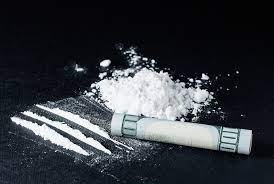
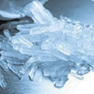
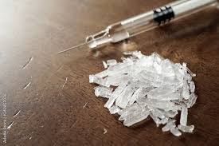

Type of all drugs
- - cocaine
- - methemphetamine
- - heroine



![]()
Drugs are substances that change a person's mental or physical state. They can affect the way your brain works, how you feel and behave, your understanding and your senses. This makes them unpredictable and dangerous, especially for young people. The effects of drugs are different for each person and drug